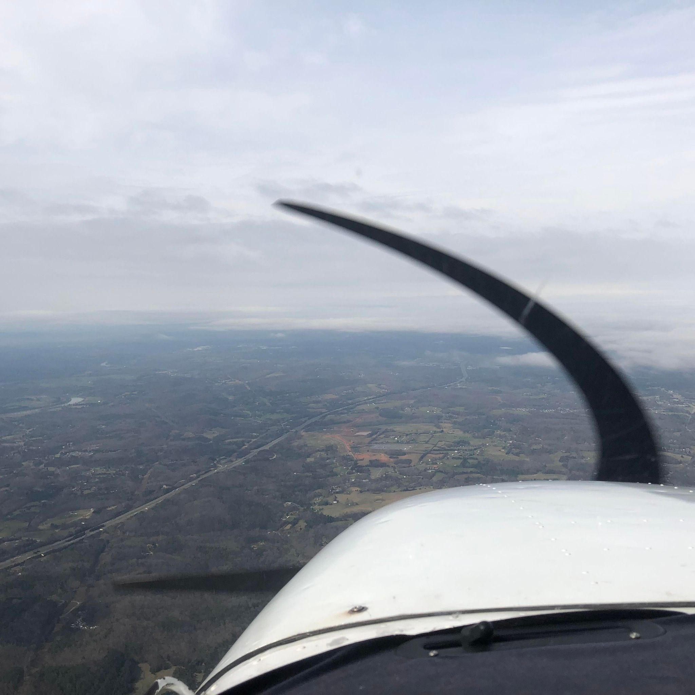

Standing on Scripture.
Following Christ.
Faith Based Pilot is a Christian ministry devoted to proclaiming biblical truth, growing in faith, and walking faithfully with Christ in every area of life.
“I am the way, the truth, and the life.”
John 14:6
Welcome
Where faith, aviation, and purpose intersect — here to lift others by pointing them to the truth of Christ.
Learn MoreMission
Equipping others with lessons drawn from flying — clarity, building skill, and the courage to act.
Learn MoreWhy Anonymity
Focusing on the message before the messenger, so stories stay universal and point to something greater.
Learn MoreContact
Questions, feedback, or prayer requests — we’d love to hear from you.
Learn MoreThe Hangar
Articles & Teachings
Long-form ministry writing to encourage and strengthen your walk with Christ — reflections on Scripture, discernment, and Christian living.
View All Articles


Logbook
Bible Studies & Resources
A searchable library of in-depth biblical studies and ministry documents, organized by topic to help you grow in truth.
Browse the LibraryWhat I Believe
Statement of Faith
Faith Based Pilot is firmly rooted in the authority of Scripture and the finished work of Jesus Christ. These core truths guide everything we teach.
View Full Statement of FaithScripture
The Bible is the inspired Word of God and the final authority for faith and life.
Jesus Christ
Eternally God, born of a virgin, crucified and risen — our Lord and Savior.
Salvation
We are saved by grace through faith in Jesus Christ alone, not by works.
The Church
The body of Christ, called to worship, discipleship, and the Great Commission.
Christ's Return
Jesus will return bodily to judge the living and the dead and reign forever.
Why Anonymity
Message before messenger.
We believe in focusing on the message before the messenger. That’s why photos are anonymous, stories are universal, and the hope is simple: to reach people where they are and point them toward something greater.
Contact
Reach out.
If you’d like to reach out, share encouragement, collaborate, or request a prayer, you can contact me directly at:
aviationministries@faithbasedpilot.com— FBP (Faith Based Pilot)